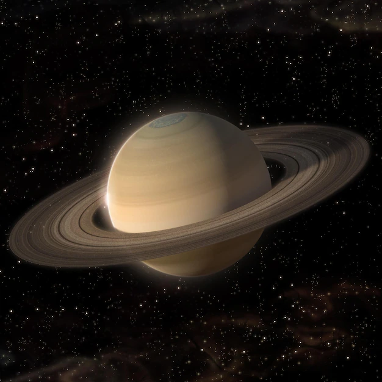
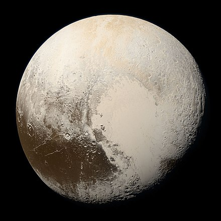

The Sun
.jpeg)
The sun is the main star of the solar system. It is a GIANT orange hot star. The sun is super huge and hot. It is basically IMPOSSIBLE to touch it, as you would disintegrate into nothing on there.
The sun is the main star of the solar system. It is a GIANT orange hot star. The sun is super huge and hot. It is basically IMPOSSIBLE to touch it, as you would disintegrate into nothing on there.
These planets are the first 4 planets of the system. They include: Mercury, Venus, Earth, and Mars. They all have unique features of their own.

Mercury is the first planet in the Solar system. It is gray. Mercury's axis has the smallest tilt of any of the Solar System's planets (about 1⁄30 degree).

Venus is the second planet in the Solar system. It is orange and very hot. Venus is shrouded by an opaque layer of highly reflective clouds of sulfuric acid.

Earth is the third planet in the Solar system. It is blue and green.. Earth is the only planet where there are living things. It has a lot of nature.

Mars is the fourth planet in the Solar system. It is red. Liquid water on the surface of Mars cannot exist due to low atmospheric pressure.
The outer planets are: gas giants, Jupiter and Saturn and ice giants, Uranus and Neptune. Beyond Neptune, a newer class of smaller worlds called dwarf planets reign, including LONGTIME favorite, Pluto!
| Planet | Image | Explanation |
| Jupiter |

|
Jupiter is the 5th planet. It is known to be a tan colored gas giant. The big red spot on Jupiter is a giant storm. |
| Saturn |  | Saturn is the 6th planet. It is known to be a dark brown colored gas giant. Saturn has big surrounding rings. |
| Uranus |

|
Uranus is the 7th planet. It is known to be a light blue colored ice giant. Uranus has a ring system, a magnetosphere, and numerous moons. |
| Neptune |

|
Neptune is the last planet. It is known to be a blue colored ice giant. It is 17 times the mass of Earth. Neptune's atmosphere has active and visible weather patterns. |
| Dwarf Planet | Image | Explanation |
| Pluto |  | Pluto is a well known dwarf planet. It is known to be a tan and small planet. Pluto has a moderately eccentric and inclined orbit! |